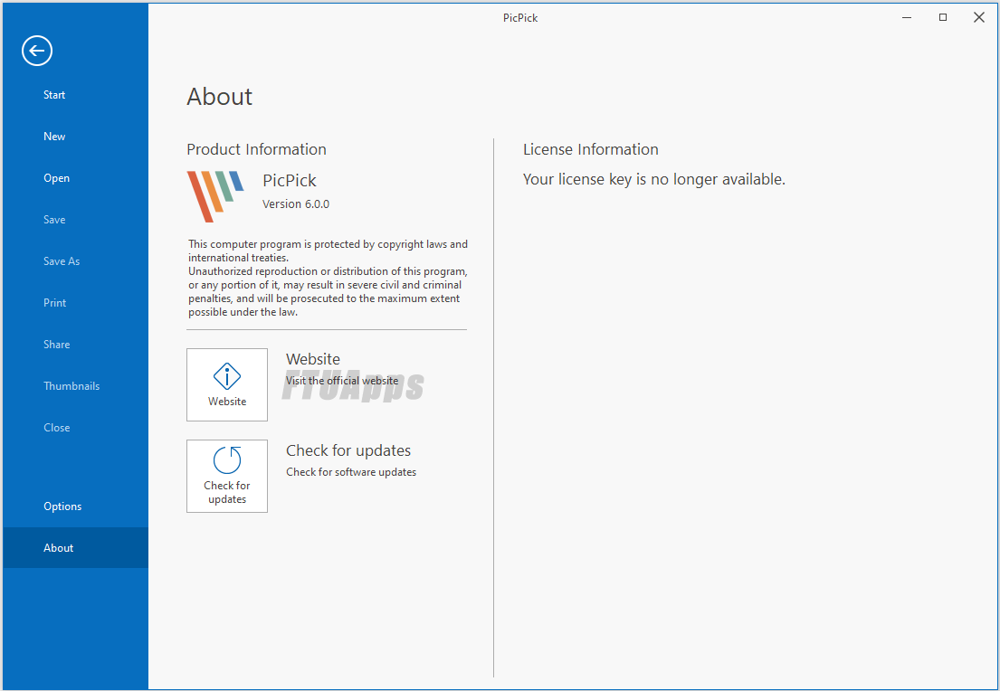

============================

Stats
Title: PicPick Professional 7.0.0 Multilingual Full Version
Category: Apps
Type: PC Software
Language: English
Total size: 16.5 MB
Uploaded By: Toylor1
============================
Info:
!!! Remember I don't own or edit anything on links that might be on this torrent!!!
PicPick Professional 7.0.0 Multilingual Full Version

PicPick - all-in-one design tool for everyone. A full-featured screen capture tool, Intuitive image editor, color picker, color palette, pixel-ruler, protractor, crosshair, whiteboard and more. User friendly and full of features for creating your image. Suitable for software developers, graphic designers and home users.
- Capture anything
Take screenshots of an entire screen, an active window, the scrolling windows and any specific region of your desktop, etc.
- Take screenshots of an entire screen, an active window, the scrolling windows and any specific region of your desktop, etc.
- Support multiple monitor environments, capturing with cursor, auto save and file naming, etc.
- Support the floating widget Capture Bar which makes it easy for you to take screenshots.
- Customize your own keyboard shortcuts.
- Edit your images
Annotate and highlight your images: text, arrows, shapes and more with the built-in image editor that includes the latest Ribbon style menu.
- Enhance with effects
Easily add effects to your images: drop shadows, frames, watermarks, mosaic, motion blur, brightness control and more.
- Share everywhere
Save, share, or send your images via Web, email, ftp, Dropbox, Google Drive, SkyDrive, Box, Evernote, Facebook, Twitter and more.
- Graphic Accessories
Variety of graphic design accessories including color picker, color palette, pixel ruler, protractor, crosshair, magnifier, whiteboard.
- Customizable setting
With highly advanced settings, you can customize hotkeys, file naming, image quality, and many other options that fits your needs.
Enjoy. ..................................>>>>>>>>>>>>>>>>>>>>>>>>>>>>>>>>>>>
============================
Stats
Title: PicPick Professional 7.0.0 Multilingual Full Version
Category: Apps
Type: PC Software
Language: English
Total size: 16.5 MB
Uploaded By: Toylor1
============================
Info:
!!! Remember I don't own or edit anything on links that might be on this torrent!!!
PicPick Professional 7.0.0 Multilingual Full Version

PicPick - all-in-one design tool for everyone. A full-featured screen capture tool, Intuitive image editor, color picker, color palette, pixel-ruler, protractor, crosshair, whiteboard and more. User friendly and full of features for creating your image. Suitable for software developers, graphic designers and home users. - Capture anything Take screenshots of an entire screen, an active window, the scrolling windows and any specific region of your desktop, etc. - Take screenshots of an entire screen, an active window, the scrolling windows and any specific region of your desktop, etc. - Support multiple monitor environments, capturing with cursor, auto save and file naming, etc. - Support the floating widget Capture Bar which makes it easy for you to take screenshots. - Customize your own keyboard shortcuts. - Edit your images Annotate and highlight your images: text, arrows, shapes and more with the built-in image editor that includes the latest Ribbon style menu. - Enhance with effects Easily add effects to your images: drop shadows, frames, watermarks, mosaic, motion blur, brightness control and more. - Share everywhere Save, share, or send your images via Web, email, ftp, Dropbox, Google Drive, SkyDrive, Box, Evernote, Facebook, Twitter and more. - Graphic Accessories Variety of graphic design accessories including color picker, color palette, pixel ruler, protractor, crosshair, magnifier, whiteboard. - Customizable setting With highly advanced settings, you can customize hotkeys, file naming, image quality, and many other options that fits your needs. Enjoy. ..................................>>>>>>>>>>>>>>>>>>>>>>>>>>>>>>>>>>>